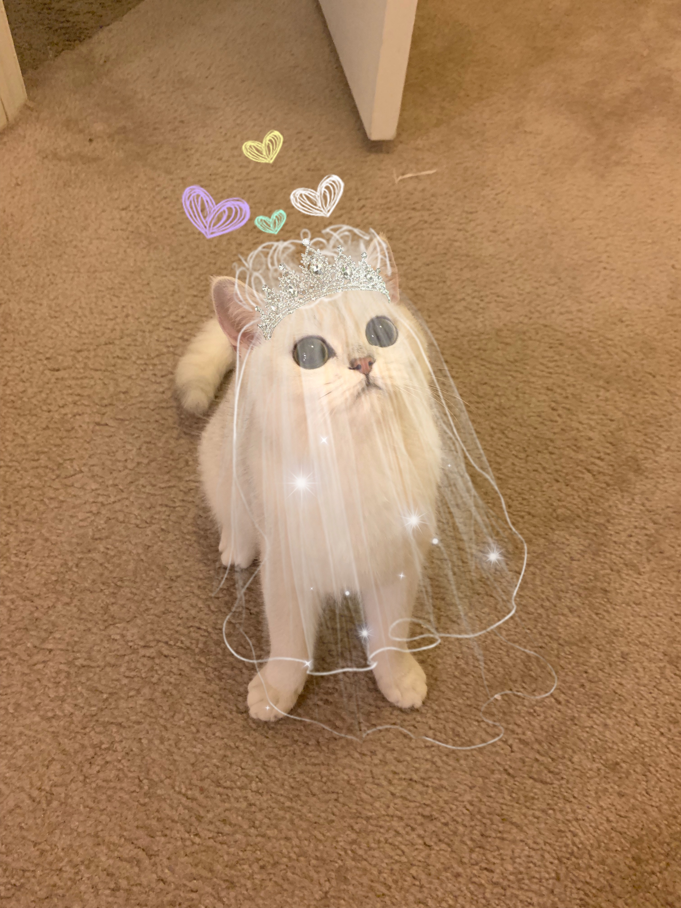

Bacon Q Dog

Bacon Q. Dog is a 9yr old labradoodle. He prefers to spend his days lounging among the three different beds/couches that his family has gifted him. He enjoys a walk or two around the neighborhood, as long as he can pretend that he doesn't see any of the other animals to avoid the embarrassment of not wanting to admit he has no wolf-like skills in chasing them.
At night just as the rest of the family is ready to relax, Bacon suddenly wants to release all of his energy. He will place his toys on a mini couch and frantically drag the couch around, giving his toys "a ride." There is also a lot of rolling. Lots and lots of rolling.
Photo Gallery


Likes
- Belly rubs
- Playing tug-of-war
- Sneaking onto the couch
Rocket

Rocket (also named huihui) is a 6-month pomeranian puppy with big eyes and a small, black cute nose. Rocket is named rocket because he runs so fast and energetic all day without even having some rest. Rocket loves to carry his little toy walking around the house and jumping towards my bed.
Rocket is friendly to all human beings. He will be a little shy at first, but will ‘say hi’ to you after a few seconds. He is also friendly to dogs, especially the small breed, because the large size dogs are hard for him to smell lol. If you meet rocket, don’t hesitate to say hi to him!! He will be super happy the whole day.
Photo Gallery


Likes
- Chewing bones
- Chasing
Chako

With a coat as dark as midnight but eyes as bright as stars, he seemed to embody both the mystery and the exuberance of life itself. Agile and playful, he danced around the park as if the grass were his personal stage, captivating everyone with his vivacity.
Yet, when at home, Chako transformed into a zen master. He would curl up on his favorite rug, eyes half-closed in contemplation, as if solving the great puzzles of the universe. Both spirited and serene, Mochi was a living testament to the richness of dualities, teaching his human companions that one could be many things all at once.
Photo Gallery


Likes
- Chewing bones
- Chasing
Miumiu
Miumiu is a five-year-old silver gradient British shorthair cat. She was born in Russia and raised in the United States and China. She is a mom of two babies. She loves to sleep.
Miumiu is kind of timid and afraid to meet strangers. But she is very close to her family, she loves to lie next to her family. She is very talkative and loves to meow.
Photo Gallery


Likes
- Chicken breast
- Sleeping
- Observing birds outside the window
Peddie

Peddie, the Golden Retriever, is a charming and lively companion known for his beautiful coat and playful nature. He's a perfect partner for outdoor fun, loved for his loyalty and gentle disposition.
Peddie's intelligence and friendly demeanor make him a beloved member of his family and a source of joy for everyone who knows him.
Photo Gallery


Likes
- Swimming
- Running in the park
- Meeting new friends